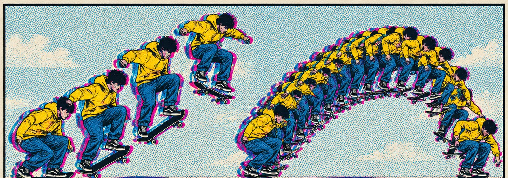
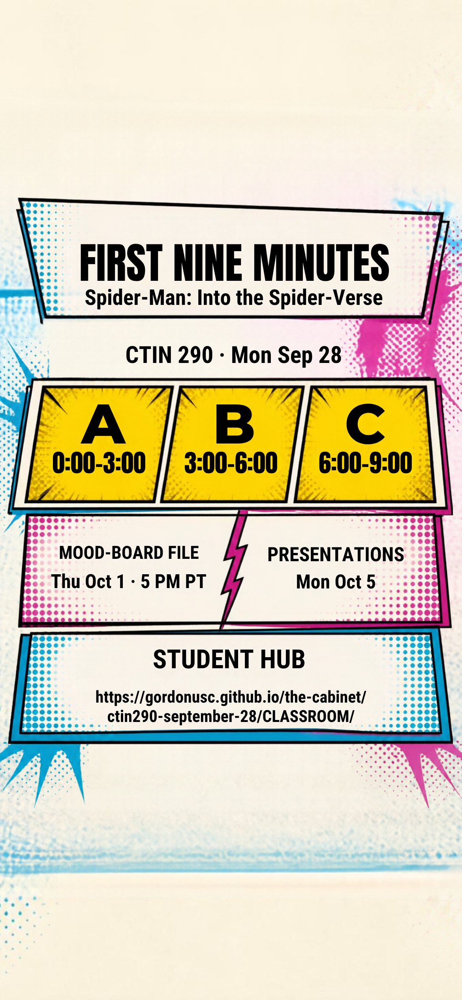

CTIN 290 · Monday, September 28
Frame rate
is a voice.
Nine minutes of one film, watched four ways. A second film that did it for less. Then thirty-nine real minutes on your board.

Today's classroom
The lesson screens in order.
Clips and viewing questions
Exact play windows for today's three clips.
Your digital notes
Stations, synthesis and the exit ticket. Download to keep a copy.
Mood-board team studio
12:06 to 12:45 in your actual shared file.
Today's concepts
On ones and twos, smear frames, calling card, chimera, 2D over 3D.
Full grading rubrics
Every scoring band for the video and mood board.
Student guide PDF
The prompts and dates in one portable reference.
Phone lock screen card

Station windows and the two dates, sized for an iPhone. Save the image and set it as your lock screen for the week.
What you will practice
- Read a change of drawing rate as a statement about character before any dialogue confirms it.
- Name three comic-book devices in motion and say what each buys.
- Take one portable lesson from a show that got expressive motion without a Spider-Verse budget, and bring it to the mood board.
Dates
Mood-board file: Thursday October 1, 5 PM Pacific.
Team presentations: Monday October 5, five minutes, everyone speaks.
Nothing new is due today. Homework is ungraded: two lines on a frame-rate change in an animation you choose, for Wednesday.
Mood-board file: Thursday October 1, 5 PM Pacific.
Team presentations: Monday October 5, five minutes, everyone speaks.
Nothing new is due today. Homework is ungraded: two lines on a frame-rate change in an animation you choose, for Wednesday.
Lock screen for the week
